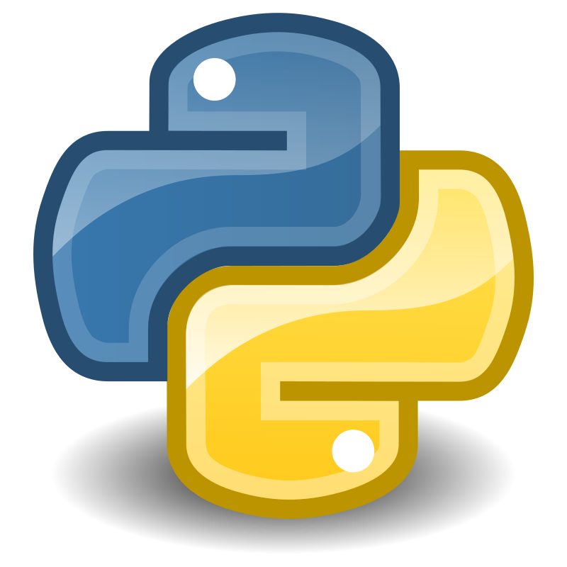

C#

Wat is C#?
C# is een objectgeoriënteerde programmeertaal ontwikkeld door Microsoft. Het wordt veel gebruikt voor het ontwikkelen van Windows-applicaties, games (via Unity), en webapplicaties.
Waarom C# leren?
- Sterke integratie met het .NET-framework.
- Ideaal voor game development met Unity.
- Uitstekende ondersteuning voor Windows-applicaties.
Python

Wat is Python?
Python is een veelzijdige, hoogwaardige programmeertaal die bekend staat om zijn eenvoud en leesbaarheid. Het wordt gebruikt voor webdevelopment, data-analyse, AI, en meer.
Waarom Python leren?
- Gemakkelijk te leren voor beginners.
- Uitgebreide bibliotheken voor data-analyse en machine learning.
- Populair in wetenschappelijk onderzoek en automatisering.